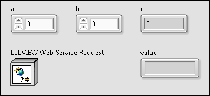
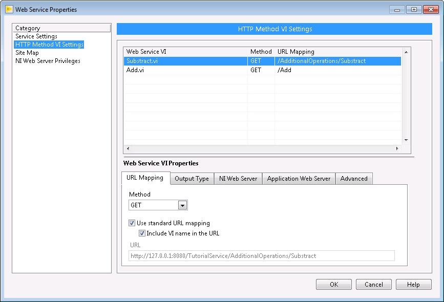

Tutorial: Creating and Publishing a LabVIEW Web Service to the Application Web Server (Real-Time, Windows)
Complete the following steps to create, publish, and exchange data between a LabVIEW Web service and a web client, in this case, a web browser.
Note For more information about concepts in this topic, refer to the Web services introduction. LabVIEW Web services are available only in the LabVIEW Full Development System and the LabVIEW Professional Development System.
Develop a Web service in a LabVIEW project to group together and configure the VIs and other files that make up the Web service. Complete the following steps to create a Web service project and two HTTP method VIs.
Create a LabVIEW project to organize the Web service files. Save the project as Tutorial.lvproj.
Right-click My Computer and select New»Web Service. LabVIEW adds a Web service project item and folders under the target.
Note
In this tutorial, you create a Web service and publish it on the host computer. You also can publish a Web service to a Real-Time target by creating a Web service project under the RT target in a LabVIEW project.
Right-click the Web service project item , select Rename, and name the Web service TutorialService. The project appears as follows:
Right-click Web Resources and select New VI to create a new HTTP method VI, which is a VI that receives HTTP requests from clients and returns data to clients. LabVIEW opens a new VI from a template.
Note By default, an HTTP method VI returns data to clients via the connector pane. In this tutorial, the HTTP method VIs return the default JSON-formatted text responses. When you create an HTTP method VI outside this tutorial, you also can stream data to a client in a custom format, such as a customized HTML page or image data. Configure the output format type on the HTTP Method VI Settings page of the Web Service Properties dialog box.
In the new VI, build the block diagram, front panel, and connector pane as shown in the following figures.
Block Diagram
Front Panel
Connector Pane

When you publish this VI as part of a Web service, a web client can send an HTTP request to invoke it. When invoked, this VI performs the following actions:
Receives the values of any controls assigned to the connector pane (exceptLabVIEW Web Service Request) from the HTTP request the client made. LabVIEW Web Service Request acts like a refnum by identifying the current HTTP request.
Computes the sum of a and b.
Returns the sum of those values to the client via the c indicator assigned to the connector pane.
Executes the Read Request Variable VI and returns the query string the client included in the current HTTP request, which LabVIEW Web Service Request identifies.
Tip In a more complex Web service, you might use other VIs on the Web Services palette to enable features such as HTTP sessions, authentication, HTTP headers, and cookies.
Notice that each control and indicator appears on the connector pane. With the default Terminal output type, Web services can receive data from clients or send data to clients only through inputs and outputs assigned to the connector pane of an HTTP method VI.
Tip Assign recognizable names to each object. These names become part of the URL that web clients use to exchange data with the VI.
Save the VI as Add.vi.
Select File»Save As and select Copy»Open additional copy in the dialog box that prompts. Ensure the Add copy to Tutorial.lvproj checkbox contains a checkmark, and then click Continue.
Save the new copy as Subtract.vi.
Open the block diagram of Subtract.vi and replace the Add function with the Subtract function. Rewire the controls and indicators.
Return to the project, right-click Web Resources, and select New Web Resource. Rename the new project item AdditionalOperations.
Drag Subtract.vi under the AdditionalOperations project item. Save the project, which should appear as in the following figure.
Notice the following features in the project tree:
LabVIEW appends an HTTP request type to the name of each HTTP method VI, which by default is GET. You can change the type of HTTP request that clients send to a specific HTTP method VI later in this tutorial.
The Web service project item also contains a Startup VIs folder. This tutorial does not use startup VIs, but you can find more information about them at the end of the tutorial.
Before you publish the Web service to a target, you might want to test that the HTTP method VIs communicate with clients as expected. You can place the Web service on a debugging server directly from the LabVIEW project to allow a client to send requests to HTTP method VIs. The debugging server provides a sandbox-like environment.
(Windows) Right-click the Web service project item under My Computer and select Application Web Server»Start (Debug Server).
(Real-Time) Right-click the Web service project item under the RT target and select Start (Debug Server).
Open Add.vi. Notice that the Run button indicates the VI is reserved for execution because LabVIEW loads the Web service and makes it available on the debugging server for communication with clients.
Close Add.vi.
Complete the following steps to get the URL that clients use to invoke Add.vi:
Right-click Add.vi and select Show Method URL to display the HTTP Method URL dialog box.
In the Available Servers pull-down menu, select the item that contains Local Debugging, and then click the Copy URL button. Clients must communicate with Web services on the debugging server through a different port than if you publish the service to a web server.
Close the dialog box.
Note The Web service does not respond to any requests from the client if the HTTP Method URL dialog box is open.
Paste the URL from step 4 into a standard web browser and replace the {value} variables with numeric values, such as: http://127.0.0.1:8001/TutorialService/Add?b=2&a=3.
Browse to the URL. Add.vi receives the HTTP request from the browser, computes the sum of the values for a and b, and returns a response with the name and output value of each indicator assigned to the connector pane of Add.vi. In this tutorial, the response is a JSON string, which is the default Terminal output format. Recall that Add.vi has two indicators assigned to its connector pane, c and value, whose values the HTTP method VI returns in the response.
{"c":5,"value":"b=2&a=3"}
Note If you notice unexpected behavior, you must stop the debugging session before you can edit the Web service files because you cannot edit the files while LabVIEW reserves them for execution.
Repeat steps 4 and 5 for Subtract.vi, or update the URL from step 5 to reflect the unique URL mapping for Subtract.vi: http://127.0.0.1:8001/TutorialService/AdditionalOperations/Subtract?b=2&a=3.
Repeat step 6 for Subtract.vi.
(Windows) Right-click the Web service project item and select Application Web Server»Stop (Debug Server).
(Real-Time) Right-click the Web service project item and select Stop (Debug Server).
Web clients use URLs to exchange data with HTTP method VIs. Later in this tutorial, you will enter a specific URL in a web browser to send data directly to the controls on the connector pane of the HTTP method VIs.
Complete the following steps to define the URLs clients can use to access the HTTP method VIs:
Right-click the Web service project item and select Properties to display the Web Service Properties dialog box.
On the HTTP Method VI Settings page, notice that HTTP method VIs from the Web Resources folder in the LabVIEW project appear in the table of Web service VIs. Further, notice how placing Subtract.vi under the AdditionalOperations project item affects the URL mapping compared to Add.vi.
Select Subtract.vi in the table and notice the following features on the URL Mapping tab at the bottom of the page:
You can change the HTTP request type in the�Method�pull-down menu. Use the default GET value for Subtract.vi.
You can choose to disable the standard format LabVIEW uses to map a URL to the VI and instead customize the part of the URL that appears after the service name. For this tutorial, use the standard URL mapping and include the VI name.
The URL field displays the base URL LabVIEW creates for the HTTP method VI. For example, for Subtract.vi, LabVIEW creates the default URL mapping /AdditionalOperations/Subtract.

Note In a more complex Web service, you might use the remaining tabs on this page to configure the format that the VI returns output data to the web client, as well as security settings like permissions.
Click OK to close the Web Service Properties dialog box.
Publishing the Web Service to the Application Web Server
You can publish the Web service you create to the Application Web Server. In this tutorial, you publish a stand-alone Web service, but in a more complex application, you might publish a Web service through a LabVIEW stand-alone application or an installer. The Application Web Server hosts Web services on a network and provides multiple security-related features to protect the network data exchange, including Secure Socket Layer (SSL) encryption.
Complete the following steps to send data to the published Web service from a web browser via a URL:
Right-click Add.vi and select Show Method URL to display the HTTP Method URL dialog box.
In the Available Servers pull-down menu, select the item that contains Application, and then click the Copy URL button. This URL contains a different port number than the URL for the debugging server. LabVIEW uses this port number for communication with the Web service files running on the Application Web Server.
Close the dialog box.
Paste the URL into a standard web browser and replace the {value} variables with numeric values, such as: http://127.0.0.1:8080/TutorialService/Add?b=2&a=3.
Note If the client is located on a different system than where you publish the Web service, you must replace�127.0.0.1�with the actual IP address of the hosting system or the hostname you customize in NI Web-based Configuration & Monitoring.
The browser returns a JSON response with the output values from each indicator assigned to the connector pane.
Complete the following steps to check the status of Web services published to the Application Web Server:
Right-click the Web service project item and select Application Web Server»Manage Web Server. NI Web-based Configuration & Monitoring opens in a web browser.
Click the Web Services Management button in the left-hand sidebar .
Select TutorialService in the Published Web Services list. If the list is empty, click the Refresh button.
Notice that the status of the Web service is Running. To pause, resume, restart, and unpublish Web services, use the buttons at the bottom of the page.
On the right side of the page, notice that the URL mappings for the HTTP method VIs, Add and AdditionalOperations/Subtract, appear with the HTTP method they perform.

 , select Rename, and name the Web service TutorialService. The project appears as follows:
, select Rename, and name the Web service TutorialService. The project appears as follows:


 .
. Open example
Open example  Find related examples
Find related examples